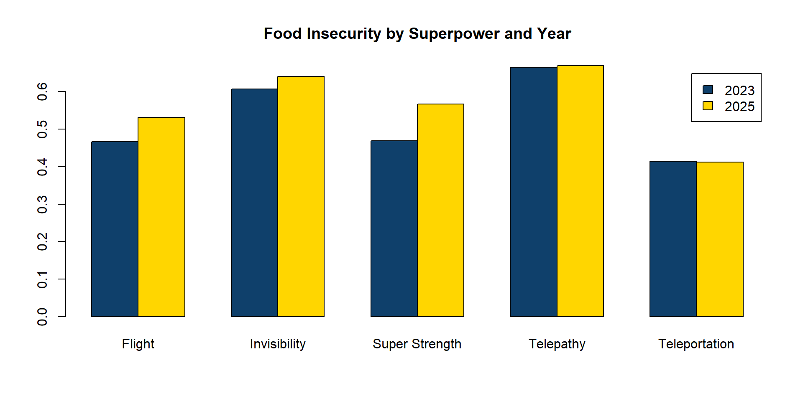
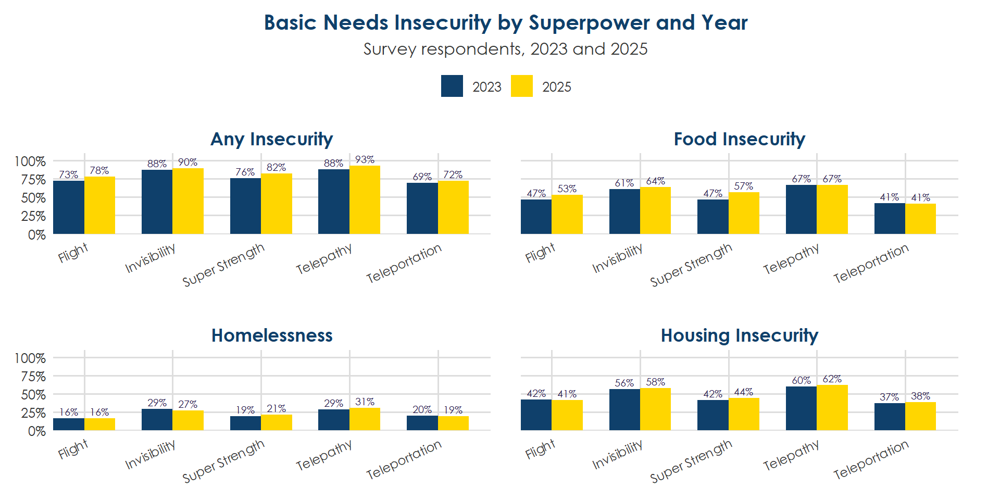

# Read in the datasets (in practice, you would just read in the CSVs you already created)
df_survey <- read.csv(here("data","survey_data.csv"))
df_sis <- read.csv(here("data","sis_data.csv"))
# If these were excel files, you would use read_xlsx() instead, like this:
# df_survey <- read_xlsx("data/survey_data.xlsx")
# Filter to only students who provided a student ID before merging.
# This is filtering using base R.
df_survey <- df_survey[!is.na(df_survey$student_id), ] # Remember [rows, columns] indexing.
# Alternatively, using dplyr, you could do:
# df_survey <- df_survey %>% filter(!is.na(student_id))
# OR if you want to keep people with telepathy only, you can do:
df_telepathy <- df_survey %>% filter(superpower == "Telepathy")
# OR if you want it by year
df_2023 <- df_survey %>% filter(year == 2023)
# Merge datasets on student_id and year
df <- merge(df_survey, df_sis, by = c("student_id", "year"), all.x = TRUE)
# all.x = TRUE keeps all rows from df_survey, even if there's no match in df_sis.
# Save to CSV
write.csv(df, here("data","data_clean.csv"), row.names = FALSE)Data Visualization in R
Demonstration for CAMP
Vinnie Wu
2026-06-25
Agenda
Today we’ll cover
- Why use R for data visualization?
- A reproducible R workflow
- Choosing the right viz package
- Examples using Base R, ggplot2, and plotly
- Accessibility considerations
- Automation and reporting
Why use R?
Most people associate R with statistics.
However, I primarily have been using R to communicate data.
- Publication-quality graphics
- Interactive dashboards
- Automated reports
- Institutional branding
- Reproducible workflows
- HTML, PDF, Word, and PowerPoint outputs
A reproducible R workflow

We will focus on steps 4-5 today.
Choose the viz package
| Feature | Base R | ggplot2 | Plotly |
|---|---|---|---|
| Learning curve | ★☆☆ | ★★☆ | ★★★ |
| Customization | Low | High | Very High |
| Graphics quality | Limited | Excellent | Good |
| Interactive | No | No | Yes |
| Accessibility support | Manual | Good (Quarto fig-alt) |
Manual (ARIA labels) |
| Branding / themes | Limited | Excellent | Excellent |
| Automation | Good | Excellent | Excellent |
| Best output | PDF/HTML | HTML | |
| Best use case | Quick exploration | Reports & presentations | Dashboards & web reports |
Let’s explore CAMP data
To avoid me getting fired due to FERPA, we have made-up data. Today, our college is the College of Awesome Metrics and Planning (CAMP), where students have superpowers. We want to look at their basic needs insecurity.
Our dataset combines:
- survey data measuring basic needs insecurity
- student information system (SIS) data with academic outcomes
…for one merged dataset ready for visualization.
Reading and merging data
We have multiple data sources, so we need to read them into R and merge/join them as appropriate.
Shaping the data
We have the raw data that was read in. To create plots, we need to create a data frame with the summarized stats that we might want to display.
# Calculate outcome rates by superpower
# colnames(df) # forgot what i named the columns
# expand multi-superpower rows so each superpower gets its own row.
# A student with "Flight, Invisibility" becomes two rows — one for each.
# This means they're counted in both groups (inclusive method).
df_expanded <- df %>%
mutate(superpower = strsplit(superpower, ", ")) %>%
tidyr::unnest(superpower)
# Total respondents per year (for "n of total" in hover)
year_totals <- df_expanded %>%
group_by(year) %>%
summarise(total = n_distinct(student_id), .groups = "drop")
df_rates <- df_expanded %>%
group_by(superpower, year) %>%
summarise(
`Food Insecurity` = mean(food_insecurity, na.rm = TRUE),
`Housing Insecurity` = mean(housing_insecurity, na.rm = TRUE),
`Homelessness` = mean(homelessness, na.rm = TRUE),
`Any Insecurity` = mean(any_insecurity, na.rm = TRUE),
n = n_distinct(student_id), # unique students in this superpower × year group
.groups = "drop"
) %>%
tidyr::pivot_longer(
cols = -c(superpower, year, n),
names_to = "outcome",
values_to = "rate"
) %>%
left_join(year_totals, by = "year")Viz 1: Base R - bar chart
Code using base R: Creating the bar chart
We have the data frame with summary stats, but we need to shape it into a usable table with the specific metrics we want. in base R, we are using one outcome at a time.
# Reshape into a table: rows = outcomes, columns = superpowers
# Food Insecurity
rate_tab_food <- tapply(
# values to summarise
df_rates$rate[df_rates$outcome == "Food Insecurity"],
list(df_rates$year[df_rates$outcome == "Food Insecurity"],
# rows of the matrix -> bar groups
df_rates$superpower[df_rates$outcome == "Food Insecurity"]),
# columns -> x-axis positions
identity) #return value as is
barplot(rate_tab_food, beside = T,
col = fc_colors[c("Blue", "Yellow")],
main = "Food Insecurity by Superpower and Year",
legend.text = c("2023", "2025")) Flight Invisibility Super Strength Telepathy Teleportation
2023 0.4660870 0.6070588 0.4683099 0.6652174 0.4144144
2025 0.5308989 0.6409266 0.5670498 0.6695652 0.4117647Base R bar chart

Figure 1
Viz 2: ggplot2 - bar chart
Code using ggplot2: Creating the bar chart
Notice that this uses df_rates, which is the data frame that summarizes the stats. There’s more customization here.
ggplot(df_rates, aes(x = superpower, y = rate, fill = factor(year))) +
geom_col(
position = position_dodge(width = 0.7),
width = 0.7
) +
facet_wrap( # 2 rows
~outcome,
ncol = 2,
scales = "free_x" # so all graphs have x axis labels
) +
geom_text( #add text labels
aes(label = paste0(round(rate * 100, 0), "%")),
position = position_dodge(width = 0.7),
vjust = -0.4,
size = 2.5,
# fontface = "bold",
color = "#1B0D42"
) +
scale_fill_manual(
values = c(
"2023" = fc_colors[["Blue"]],
"2025" = fc_colors[["Yellow"]]
)
) +
scale_x_discrete(
expand = expansion(mult = c(0.05, 0.15))
) +
scale_y_continuous(
labels = scales::percent_format(accuracy = 1),
limits = c(0, 1.1),
expand = expansion(mult = c(0, 0))
) +
labs(
title = "Basic Needs Insecurity by Superpower and Year",
subtitle = "Survey respondents, 2023 and 2025",
x = NULL,
y = NULL,
fill = NULL
) +
theme_fc() +
theme(
legend.position = "top",
strip.text = element_text(
size = 13,
face = "bold",
color = fc_colors[["Blue"]]
),
plot.title = element_text(
size = 15
),
axis.text.x = element_text(
angle = 25,
hjust = 1,
size = 9
),
panel.spacing.x = unit(1.5, "lines"),
panel.spacing.y = unit(1.5, "lines"),
plot.margin = margin(
t = 10,
r = 30,
b = 10,
l = 10
)
)
Figure 2
ggplot2 bar chart

Figure 3
Viz 3: plotly - bar chart
Code using plotly: Replicating the bar chart
This plotly replicates the ggplot2 graph above. This isn’t a graph I would usually show because it’s too busy. It separates the graphs based on their outcomes.
outcome_plots <- lapply(unique(df_rates$outcome), function(oc) {
df_oc <- df_rates %>% filter(outcome == oc) # filter by outcome
plot_ly(
data = df_oc,
x = ~superpower,
y = ~rate,
color = ~factor(year),
legendgroup = ~factor(year),
colors = c("2023" = fc_colors[["Blue"]], "2025" = fc_colors[["Yellow"]]),
type = "bar",
text = ~paste0(round(rate * 100, 0), "%"),
textposition = "outside",
cliponaxis = FALSE,
textfont = list(color = "#242424 ", size = 11),
customdata = ~paste0(round(rate * 100, 1), "% (", year, ")<br>",
n, " of ", total),
hovertemplate = paste0(
"<b style='color:#FFD600;'>%{x}</b><br>%{customdata} respondents<extra></extra>"),
showlegend = oc == unique(df_rates$outcome)[1]
) %>%
layout(
barmode = "group",
margin = list(t = 110, l = 10, r = 10, b = 40),
xaxis = list(title = ""),
yaxis = list(
title = "",
tickformat = ".0%",
range = c(0, 1.10)
),
annotations = list(list(
text = paste0("<b>", oc, "</b>"),
x = 0.5,
y = .98,
xref = "paper",
yref = "paper",
showarrow = FALSE,
xanchor = "center",
font = list(size = 13, color = fc_colors[["Blue"]], family = "Century Gothic")
))
)
})
fig_facet <- subplot(
outcome_plots,
nrows = 2,
shareY = FALSE,
shareX = FALSE,
titleX = TRUE,
titleY = TRUE,
margin = 0.08) %>%
layout(
autosize = TRUE,
title = list(
text = "<b>Basic Needs Insecurity by Superpower and Year</b>",
font = list(size = 20)
),
legend = list(
orientation = "h",
x = .5, xanchor = "center",
y = 1.08)
) %>%
fc_plotly_theme()
# alt text for accessibility
alt_text <- paste0(
"This is multiple bar charts. Pretend this describes the results."
)
htmltools::tags$div(
role = "img",
`aria-label` = alt_text,
fig_facet)plotly bar chart
Code using plotly: Creating dropdowns
That was cool but it’s busy. Let’s separate out the graphs by outcome.
rates_long <- df_expanded %>%
filter(!is.na(superpower)) %>%
group_by(superpower, year) %>%
summarise(
across(
all_of(outcome_names),
list(
pct = ~round(100 * mean(., na.rm = TRUE), 1),
n = ~n_distinct(student_id)
),
.names = "{.col}__{.fn}"
),
.groups = "drop"
) %>%
pivot_longer(
cols = -c(superpower, year),
names_to = c("outcome", ".value"),
names_sep = "__"
) %>%
left_join(year_totals, by = "year") %>%
mutate(
outcome_label = outcome_map[outcome],
custom = paste0(n, " of ", total)
)
year_colors <- c(
"2023" = fc_colors[["Blue"]],
"2025" = fc_colors[["Yellow"]]
)
years <- sort(unique(rates_long$year))
initial_outcome <- 4
n_traces <- length(outcome_names) * length(years)
fig_outcomes <- plot_ly(
showlegend = TRUE,
width = 800
)
for (i in seq_along(outcome_names)) {
for (yr in years) {
df_i <- rates_long %>%
filter(
outcome == outcome_names[i],
year == yr
) %>%
arrange(pct)
fig_outcomes <- fig_outcomes %>%
add_bars(
data = df_i,
x = ~superpower,
y = ~pct,
name = as.character(yr),
legendgroup = as.character(yr),
showlegend = (i == initial_outcome),
text = ~paste0(pct, "%"),
textposition = "outside",
cliponaxis = FALSE,
customdata = ~custom,
hovertemplate = paste0(
"<b style='color:#FFD600;'>%{x}, ",
as.character(yr),
":</b> %{y}%<br>",
"%{customdata} respondents",
"<extra></extra>"
),
marker = list(
color = year_colors[[as.character(yr)]]
),
visible = (i == initial_outcome)
)
}
}
## fml this button_outcomes is only for the legend... to make sure it shows on all dropdowns..
buttons_outcomes <- lapply(seq_along(outcome_names), function(i) {
vis <- rep(FALSE, n_traces)
showleg <- rep(FALSE, n_traces)
idx <- ((i - 1) * length(years) + 1):(i * length(years))
vis[idx] <- TRUE
showleg[idx] <- TRUE
list(
method = "restyle",
args = list(
list(
visible = vis,
showlegend = showleg
)
),
label = outcome_labels[i]
)
})
sp_order_outcomes <- rates_long %>%
filter(outcome == "any_insecurity") %>%
arrange(desc(pct)) %>%
pull(superpower) %>%
unique()
fig_outcomes <- fig_outcomes %>%
layout(
barmode = "group",
margin = list(
t = 100,
l = 60,
r = 40,
b = 40),
yaxis = list(
title = "% of Students",
range = c(0, 115)),
xaxis = list(
title = "",
categoryorder = "array",
categoryarray = sp_order_outcomes),
legend = list(
orientation = "h",
x = 0.05, xanchor = "left",
y = 1.1, yanchor = "top" ),
annotations = list(
list(
text = "<b>Select Insecurity Outcome:</b>",
x = 0.5,
y = 1.25,
xref = "paper",
yref = "paper",
showarrow = FALSE,
xanchor = "center",
font = list(
size = 20,
color = fc_gray
)
)
),
updatemenus = list(
list(
type = "dropdown",
active = initial_outcome - 1,
x = 0.5,
y = 1.10,
xref = "paper",
yref = "paper",
xanchor = "center",
font = list(size = 16),
buttons = buttons_outcomes
)
),
autosize = TRUE
) %>%
fc_plotly_theme()
alt_text <- paste0(
"These bar charts have dropdowns! Pretend this describes the results."
)
htmltools::tags$div(
role = "img",
`aria-label` = alt_text,
style = "width:100%;",
fig_outcomes)plotly bar chart - dropdowns
Viz 4: plotly - heatmap
Code using plotly: HEATMAPPPPP!!
Why? Well, why not?
#creating the data table with the variables
heat_data <- df_expanded %>%
filter(!is.na(superpower)) %>%
group_by(superpower) %>%
summarise(
across(
all_of(outcome_names),
list(
pct = ~round(100 * mean(., na.rm = TRUE), 1),
n = ~sum(., na.rm = TRUE),
total = ~sum(!is.na(.))),
.names = "{.col}__{.fn}"),
.groups = "drop")
sp_order <- heat_data %>%
arrange(desc(any_insecurity__pct)) %>%
pull(superpower)
#pivoting
heat_long <- heat_data %>%
pivot_longer(
cols = -superpower,
names_to = c("outcome", ".value"),
names_sep = "__") %>%
mutate(
outcome_label = factor(outcome_map[outcome], levels = rev(outcome_labels)),
superpower = factor(superpower, levels = sp_order))
# 5-step bins need to be centered on mean
# Set midpoints based on means
midpoints <- df %>%
summarise(across(all_of(outcome_names), ~round(100 * mean(., na.rm = TRUE), 1))) %>%
unlist()
#creating heat map color spectrum/breaks
heat_long <- heat_long %>%
group_by(outcome) %>%
mutate(
mid = midpoints[outcome[1]],
rng = max(max(pct, na.rm = TRUE) - mid, mid - min(pct, na.rm = TRUE), 10),
slice = rng / 5,
step_bin = as.numeric(cut(
pct,
breaks = unique(c(-Inf,
mid - 2 * slice,
mid - 0.5 * slice,
mid + 0.5 * slice,
mid + 2 * slice,
Inf)),
labels = FALSE,
include.lowest = TRUE
))
) %>%
ungroup()
# defining stuff
sp_levels <- levels(heat_long$superpower)
outcomes_ordered <- outcome_names
# creating empty matrices with the outcomes
pct_mat <- matrix(NA, nrow = length(sp_levels), ncol = length(outcomes_ordered)) #raw %
step_mat <- matrix(NA, nrow = length(sp_levels), ncol = length(outcomes_ordered)) #steps
hover_mat <- matrix("", nrow = length(sp_levels), ncol = length(outcomes_ordered)) #hoverstring
text_mat <- matrix("", nrow = length(sp_levels), ncol = length(outcomes_ordered)) #label for cell
for (i in seq_along(sp_levels)) {
for (j in seq_along(outcomes_ordered)) {
row <- heat_long %>%
filter(superpower == sp_levels[i], outcome == outcomes_ordered[j])
if (nrow(row) > 0) {
pct_mat[i, j] <- row$pct
step_mat[i, j] <- row$step_bin
hover_mat[i, j] <- paste0(
"<b><span style='color:#FFD600;'>",
outcome_map[outcomes_ordered[j]], ": ", row$pct, "%</span></b><br>",
row$n, " of ", row$total, " respondents")
text_mat[i, j] <- paste0(row$pct, "%")
}}}
# Colorscale: yellow (low) → dark blue (high)
cs <- list(
list(0.00, fc_colors[["Yellow"]]),
list(0.25, fc_colors[["LemonZest"]]),
list(0.50, fc_colors[["Breeze"]]),
list(0.75, fc_colors[["Sky"]]),
list(1.00, fc_colors[["Blue"]])
)
# Making the heatmap finally
plot_heatmap <- plot_ly(
x = outcome_labels,
y = sp_levels,
z = step_mat,
type = "heatmap",
colorscale = cs,
zmin = 1, zmax = 5,
showscale = TRUE,
colorbar = list(
tickvals = c(1, 5),
ticktext = c("Low", "High"),
title = list(text = "<b>Relative to<br>average</b>", font = list(size = 11)),
thickness = 15,
len = 0.5
),
text = text_mat,
texttemplate = "%{text}",
textfont = list(size = 16),
hovertext = hover_mat,
hoverinfo = "text",
xgap = 3, ygap = 3,
width = 800
) %>%
layout(
title = list(text = "<b>Basic Needs Insecurity by Superpower</b>", font = list(size = 16)),
xaxis = list(title = ""),
yaxis = list(title = "", autorange = "reversed"),
autosize = TRUE,
margin = list(l = 60, r = 40, t = 60, b = 60)
) %>%
config(responsive = TRUE) %>%
fc_plotly_theme()
alt_text <- paste0(
"This is a heatmap. Pretend this describes the results."
)
htmltools::tagList(
htmltools::tags$div(
role = "img",
`aria-label` = alt_text,
plot_heatmap
)
)plotly heatmap
Viz 5: plotly - toggle
Code using plotly: Togglin’
Wait, we can toggle too??
# demographics bar chart
demo_exclusive <- df %>%
filter(!is.na(superpower)) %>%
mutate(superpower = ifelse(grepl(",", superpower), "2+ Superpowers", superpower)) %>%
count(superpower) %>%
mutate(
total = sum(n),
Percent = round(100 * n / sum(n), 1)) %>%
arrange(desc(Percent))
demo_inclusive <- df_expanded %>%
filter(!is.na(superpower), superpower != "2+ Superpowers") %>%
count(superpower) %>%
mutate(
total = nrow(df),
Percent = round(100 * n / nrow(df), 1)) %>%
arrange(desc(Percent))
# Pre-compute y orders for each trace
y_exclusive <- demo_exclusive %>% arrange(Percent) %>% pull(superpower)
y_inclusive <- demo_inclusive %>% arrange(Percent) %>% pull(superpower)
plot_demo <- plot_ly(showlegend = FALSE,width = 800) %>%
add_bars(
data = demo_exclusive,
x = ~Percent,
y = ~reorder(superpower, Percent),
orientation = "h",
text = ~paste0(Percent, "%"),
textposition = "outside",
cliponaxis = FALSE,
customdata = ~paste0(n, " of ", total),
hovertemplate = "<b style='color:#FFD600;'>%{y}:</b> %{x}%<br>%{customdata} respondents<extra></extra>",
marker = list(color = fc_colors[["Blue"]]),
visible = TRUE,
name = "Exclusive") %>%
add_bars(
data = demo_inclusive,
x = ~Percent,
y = ~reorder(superpower, Percent),
orientation = "h",
text = ~paste0(Percent, "%"),
textposition = "outside",
cliponaxis = FALSE,
customdata = ~paste0(n, " of ", total),
hovertemplate = "<b style='color:#FFD600;'>%{y}:</b> %{x}%<br>%{customdata} respondents<extra></extra>",
marker = list(color = fc_colors[["Creek"]]),
visible = FALSE,
name = "Inclusive") %>%
layout(
title = list(text = "<b>Superpowers in CAMP Students</b>", font = list(size = 16)),
margin = list(l = 120, r = 40, t = 90, b = 60),
xaxis = list(title = "% of Respondents", range = c(0, max(demo_inclusive$Percent) * 1.2)),
yaxis = list(
title = "",
categoryorder = "array",
categoryarray = y_exclusive),
autosize = TRUE,
updatemenus = list(list(
type = "buttons",
direction = "right",
x = -.1, y = 1.25,
xref = "paper", yref = "paper",
xanchor = "left",
font = list(size = 12),
buttons = list(
list(
label = "Exclusive",
method = "update",
args = list(
list(visible = list(TRUE, FALSE)),
list(
yaxis = list(categoryorder = "array", categoryarray = y_exclusive),
title = list(text = "<b>Superpowers in CAMP Students</b><br>
<sup>Students with 2 superpowers in '2+ Superpowers' category</sup>")
))),
list(
label = "Inclusive",
method = "update",
args = list(
list(visible = list(FALSE, TRUE)),
list(
yaxis = list(categoryorder = "array", categoryarray = y_inclusive),
title = list(text = "<b>Superpowers in CAMP Students</b><br><sup>
Students with 2 superpowers counted in each</sup>")
))))))) %>%
config(responsive = TRUE) %>%
fc_plotly_theme()
# making the alt text
top_cat <- demo_exclusive$superpower[1]
top_pct <- demo_exclusive$Percent[1]
alt_text_demo <- paste0(
"Horizontal bar chart of superpowers reported by CAMP students. ",
top_cat, " is the most common at ", top_pct, "%. ",
"A toggle switches between counting students with multiple superpowers ",
"once under '2+ Superpowers' (Exclusive view) or under each superpower ",
"they reported (Inclusive view)."
)
htmltools::tagList(
htmltools::tags$div(
role = "img",
`aria-label` = alt_text_demo,
plot_demo
)
)plotly toggle
Accessibility in R vizzes
Accessibility overall
Accessibility can be done whether you use base R, ggplot2, or plotly.
Every viz should:
- Include meaningful titles, which I NOT do in this tutorial.
- Use sufficient color contrast.
- Avoid relying on color (e.g., use shapes).
- Use readable font sizes. – also did not consistently do in this tutorial.
- Provide descriptive alt text.
- Keep unnecessary visual clutter to a min.
Accessibility in R vizzes
| Feature | Base R | ggplot2 | Plotly |
|---|---|---|---|
| Alt text | Manual | ✓ Quarto (fig-alt) |
Manual (ARIA) |
| Screen readers | Limited | Good for static reports | Additional HTML/ARIA |
| Keyboard navigation | N/A- static | N/A-static | Browser support w/ testing |
| Interactive | ✗ | ✗ | ✓ |
| Accessible PDF | ✓ | ✓✓ | Limited |
| Colorblind palettes | Manual | Easy | Easy |
| Data labels | Difficult | Easy | Easy |
| Font customization | Manual | Theme-based | Layout-based |
| Figure captions | Manual | Built-in | Built-in |
Accessibility code examples
Alt text in base R and ggplot2 is written into the cell itself.

Accessibility code examples
Alt text in plotly is written into the code as a wrapper.
To investigate the alt-text, you want to right click in the browser and click “Inspect”.
Firefox is the best browser to test in because it has “Inspect Accessibility Properties,” compared to Edge and Chrome.
Automation and reporting
Build today, reuse always!
- Replace the data file.
- Reuse the same branding, functions, and templates.
- Write report/create vizzes specific to project.
- Run a render (i.e., render_and_copy.R) to render and publish reports.
- Use Git for version control.
Folder structure
Here’s the folder structure that I reuse across projects.
Thank you!
CAMP RRG • Data Vizzes in R • June 2026